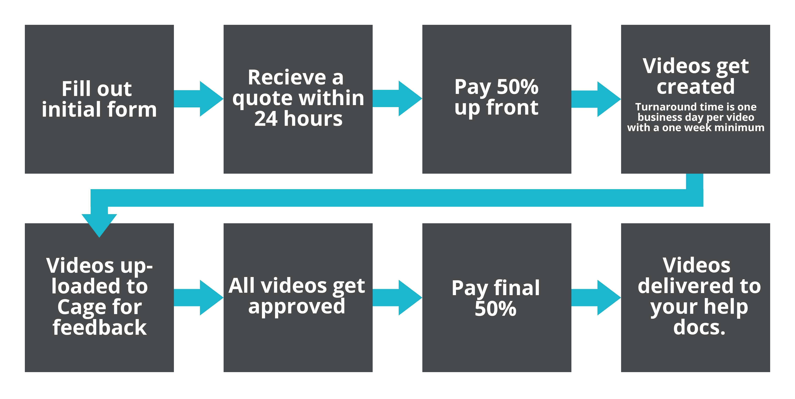

New users tend to prefer video instruction over text. Without prior knowledge of the application text can be harder to understand whereas video shows the entire process with little room for misunderstanding.
Providing short help videos encourages new users to learn the ins out and outs of your application. For the same reason users are onboarded, help videos encourage users to learn and get comfortable with your application making it harder for them to leave, turning new users into longterm customers.
Videos are a minute or less. If a video exceeds one minute each minute of video counts as an additional video.
If the following is not satisfied in my opinion I won't be able to produce your videos: